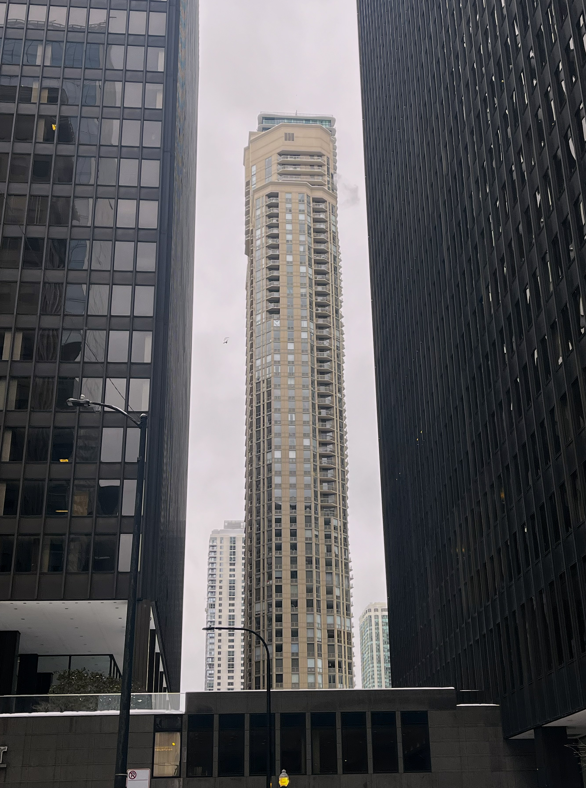

| Software Engineering Class Code: CIS 1512 Instructors: Nasser, Ahtasham |
Course Description: This course is focused on formal methods and approaches used in the design, development, testing and maintenance of computer software. Each stage of the software development life cycle (SDLC) will be studied in detail. Topics such as low-level design, high-level design, modeling with UML (Unified Modeling Language), iterative development models, rapid application development (RAD), formal testing methods, incremental deployment, formal metrics, as well as appropriate use of associated tools will be covered with practical applications. Students will be required to complete computer-based assignments inside/outside of class. Projects: The whole semester works towards a major group project. My group worked in a study planner site which students can track their assignments, test, and study time. Uses local storage and script. |
Front-End Web Technologies CIS 1440 Insructor: Nasser |
Course Description: This course is a comprehensive front-end Web design and development course designed to equip students with essential skills in building and styling interactive Web pages. It lays a strong foundation in the core technologies of the Web: HTML, CSS, and JavaScript. Students will gain an understanding of how the Internet and Web function, learning to create Web pages from scratch using HTML5 and how to enhance their visual appeal with CSS3. The course also covers the fundamentals of JavaScript, teaching students to dynamically manipulate Web content through understanding objects, functions, events, and the Document Object Model (DOM). With a focus on practical application, students will learn to use arrays and modern JavaScript techniques, such as the Fetch API for handling request/response systems. Critical thinking and problem-solving are emphasized throughout, preparing students to tackle Web development challenges effectively. Projects: Each week there is a different assignment using OnlineGDB to learn more on Javascript Node, the final project is a personal website (this one) which uses script to take user name, hold it in local storage, and uses api to retrieve current weather, date, and time |
|---|---|---|---|
| Mobile App Development CIS 2818 Instructor: Baugh, Raman |
Course Description: This course focuses on the design and implementation of wireless handheld application software on the Android platform for business and personal use. Students will use the Android Studio integrated development environment (IDE) to develop and test application software. Development techniques will focus on operational aspects of mobile devices that distinguish them from PCs and general computing platforms. Students will be required to complete computer-based assignments inside and outside of class Projects: there are a few projects we did this semester. One was a rock paper scissors game which the user chooses one of the options then the computer chooses a random won and then shows who wins. It tracks teh wins to see who hits 10 first then you can reset it. |
Roman History HIS 1662 Instructor: Dry |
Course Description (written by me): This course follows the very beginnings of the Roman republic starting with their formation as a greek colony, to brief period as a kingdon, following a few hundred years as a republic, boughts of civil war leading to their empire, then to its fall in late Antiquity Projects: This classes mostly revolves around in person discussion and discussion posts but a project we do as well is an indentity group (Women, non-Romans, Solders, Slaves, Senators) and each group chooses a sub identity to talk about with each weeks events. |
